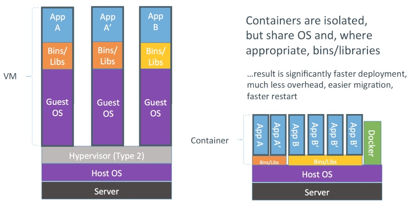

编译自：https://dzone.com/articles/evolution-of-linux-containers-future
作者： Imesh Gunaratne
原创：LCTT https://linux.cn/article-6975-1.html
译者： wxy
本文地址：https://linux.cn/article-6975-1.html

Linux 容器是一个在单一 Linux 主机上提供多个隔离的 Linux 环境的操作系统级虚拟技术。不像虚拟机（VM），容器并不需要运行专用的访客操作系统。容器们共享宿主机的操作系统内核，并使用访客操作系统的系统库来提供所需的功能。由于不需要专用的操作系统，因此容器要比虚拟器启动快得多。

（图片来自: Docker Inc.）
容器借助 Linux 内核的 Namespaces、Apparmor、SELinux 情景模式、chroot 和 CGroup 等功能来提供类似于虚拟机的隔离环境。Linux 的安全模块可以确保正确地控制容器对宿主机和内核的访问，从而避免各种入侵活动。此外，在宿主机上可以运行不同的 Linux 发行版，只要它们运行在同样的 CPU 架构下。
简单来说，容器提供的是一种基于各种 Linux 发行版创建容器镜像的方法、一套管理容器生命周期的 API、与该 API 交互的客户端工具、保存快照的功能、在宿主机之间迁移容器实例的能力，等等。
以下是容器简史，内容来自维基百科及其它来源：
容器的概念始于 1979 年的 UNIX chroot，它是一个 UNIX 操作系统上的系统调用，用于将一个进程及其子进程的根目录改变到文件系统中的一个新位置，让这些进程只能访问到该目录。这个功能的想法是为每个进程提供独立的磁盘空间。其后在 1982年，它被加入到了 BSD 系统中。
FreeBSD Jails 是最早的容器技术之一，它由 R&D Associates 公司的 Derrick T. Woolworth 在 2000 年为 FreeBSD 引入。这是一个类似 chroot 的操作系统级的系统调用，但是为文件系统、用户、网络等的隔离增加了进程沙盒功能。因此，它可以为每个 jail 指定 IP 地址、可以对软件的安装和配置进行定制，等等。
Linux VServer 是另外一种 jail 机制，它用于对计算机系统上的资源（如文件系统、CPU 处理时间、网络地址和内存等）进行安全地划分。每个所划分的分区叫做一个安全上下文，在其中的虚拟系统叫做虚拟私有服务器。
Solaris Containers 支持在 x86 和 SPARC 系统，首次出现在 2004 年 2 月发布的 Solaris 10 的 build 51 beta 上，其后完整发布在 2005 年的 Solaris 10 上。 Solaris Container 是由系统资源控制和通过 zones 提供的边界分离所组合而成的。zones 是一个单一操作系统实例中的完全隔离的虚拟服务器。
OpenVZ 类似于 Solaris Containers，它通过对 Linux 内核进行补丁来提供虚拟化、隔离、资源管理和状态检查。每个 OpenVZ 容器都有一套隔离的文件系统、用户及用户组、进程树、网络、设备和 IPC 对象。
Process Containers 是由 Google 在 2006 年实现的，用于对一组进程进行限制、记账、隔离资源使用（CPU、内存、磁盘 I/O、网络等）。后来为了避免和 Linux 内核上下文中的“容器”一词混淆而改名为 Control Groups。它被合并到了 2.6.24 内核中。这表明 Google 很早就参与了容器技术的开发，以及它们是如何回馈到社区的。
如上面所述，Control Groups （即 cgroups）是由 Google 实现的，并于 2007 年加到了 Linux 内核中。
LXC 的意思是 LinuX Containers，它是第一个最完善的 Linux 容器管理器的实现方案，是通过 cgroups 和 Linux 名字空间实现的。LXC 存在于 liblxc 库中，提供了各种编程语言的 API 实现，包括 Python3、Python2、Lua、Go、Ruby 和 Haskell。与其它容器技术不同的是， LXC 可以工作在普通的 Linux 内核上，而不需要增加补丁。现在 LXC project 是由 Canonical 公司赞助并托管的。
Warden 是由 CloudFoundry 在 2011 年开发的，开始阶段是使用的 LXC，之后替换为他们自己的实现方案。不像 LXC，Warden 并不紧密耦合到 Linux 上，而是可以工作在任何可以提供隔离环境的操作系统上。它以后台守护进程的方式运行，为容器管理提供了 API。请参考 Warden 文档和这个博客文章了解更多。
lmctfy 的意思是“让我为你包含”。这是一个 Google 容器技术的开源版本，提供 Linux 应用容器。Google 启动这个项目旨在提供性能可保证的、高资源利用率的、资源共享的、可超售的、接近零消耗的容器（参考自：lmctfy 演讲稿）。现在为 Kubernetes 所用的 cAdvisor 工具就是从 lmctfy 项目的成果开始的。lmctfy 首次发布于 2013 年10月，在 2015 年 Google 决定贡献核心的 lmctfy 概念，并抽象成 libcontainer，因此，lmctfy 现在已经没有活跃的开发了。
lincontainer 项目最初由 Docker 发起，现在已经被移交给了开放容器基金会。
Docker 是到现在为止最流行和使用广泛的容器管理系统。它最初是一个叫做 dotCloud 的 PaaS 服务公司的内部项目，后来该公司改名为 Docker。类似 Warden，Docker 开始阶段使用的也是 LXC ，之后采用自己开发的 libcontainer 替代了它。不像其它的容器平台，Docker 引入了一整个管理容器的生态系统，这包括高效、分层的容器镜像模型、全局和本地的容器注册库、清晰的 REST API、命令行等等。稍后的阶段， Docker 推动实现了一个叫做 Docker Swarm 的容器集群管理方案。
Rocket 是由 CoreOS 所启动的项目，非常类似于 Docker，但是修复了一些 Docker 中发现的问题。CoreOS 说他们的目的是提供一个比 Docker 更严格的安全性和产品需求。更重要的是，它是在一个更加开放的标准 App Container 规范上实现的。在 Rocket 之外，CoreOS 也开发了其它几个可以用于 Docker 和 Kubernetes的容器相关的产品，如：CoreOS 操作系统、etcd 和 flannel。
微软 2015 年也在 Windows Server 上为基于 Windows 的应用添加了容器支持，它称之为 Windows Containers。它与 Windows Server 2016 一同发布。通过该实现， Docker 可以原生地在 Windows 上运行 Docker 容器，而不需要启动一个虚拟机来运行 Docker（ Windows 上早期运行 Docker 需要使用 Linux 虚拟机）。
截止到今天（2016年1月），在行业内有一个显著趋势，部署软件应用从虚拟机逐渐移到了容器。其主要的原因是容器相比于虚拟机而言更加灵活和低消耗。Google 已经使用容器技术好多年了，它在 Borg 和 Omega 容器集群管理平台上可以成规模地运行 Google 应用。更重要的是，Google 为容器领域贡献了 cgroups 的实现和参与了 libcontainer 项目。Google 也在过去这些年借助容器在性能、资源利用和整体效率方面取得了巨大收益。最近，一直没有操作系统级的虚拟化技术的微软，也在 Window Server 上迅速采取动作实现了对容器的原生支持。
Docker 、Rocket 以及其它的容器平台并不能以一个单一主机运行在产品环境中，原因是这样面临着单点故障。当一组容器运行在一个单一宿主机时，如果宿主机失效，所有运行在该宿主机上的容器也会失效。要避免这个问题，应该使用容器宿主机集群。Google 借助其在 Borg 中取得的经验，开发了一个叫做 Kubernetes 的开源容器集群管理系统。Docker 也启动了一个叫做 Docker Swarm 的解决方案。目前这些解决方案还都处于相当早期的阶段，也许需要几个月或来年才实现完整的功能集合，才能变得稳定，从而广泛应用于行业内的产品环境中。
微服务是另一个突破性技术，在软件架构上可以将容器用于部署。微服务并不是一个新东西，只是一个相比标准的 Web 服务超快的轻量级 Web 服务。这是通过将功能单元（也许是一个单一服务或 API 方法）打包到一个服务中，并内嵌其到一个轻量级 Web 服务器软件中实现的。
通过对上面的介绍，我们可以预测接下来几年，容器也许会替代虚拟机，某些情况下也许会全部取代。去年我为一些企业在 POC 层面上实现了基于容器的解决方案。也有人想要在产品环境中尝试它们，这一天也许在容器集群管理系统进一步成熟后很快到来。
编译自：https://dzone.com/articles/evolution-of-linux-containers-future
作者： Imesh Gunaratne
原创：LCTT https://linux.cn/article-6975-1.html
译者： wxy
本文由 LCTT 原创翻译，Linux中国首发。也想加入译者行列，为开源做一些自己的贡献么？欢迎加入 LCTT！
翻译工作和译文发表仅用于学习和交流目的，翻译工作遵照 CC-BY-NC-SA 协议规定，如果我们的工作有侵犯到您的权益，请及时联系我们。
欢迎遵照 CC-BY-NC-SA 协议规定转载，敬请在正文中标注并保留原文/译文链接和作者/译者等信息。
文章仅代表作者的知识和看法，如有不同观点，请楼下排队吐槽 :D
Linux.CN © 2003-2016 Linux中国 | Powered by DX | 图片存储于七牛云存储
京ICP备05083684号-1 京公网安备110105001595
服务条款 | 除特别申明外，本站原创内容版权遵循 CC-BY-NC-SA 协议规定


分享到微信朋友圈
打开微信，点击底部的“发现”，
使用“扫一扫”将网页分享至朋友圈。